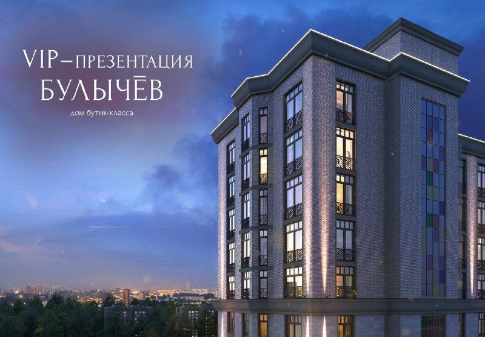
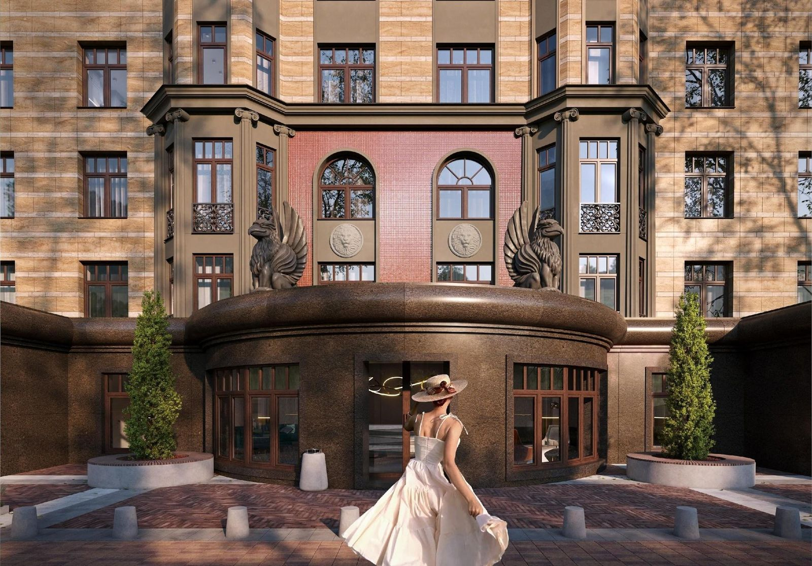
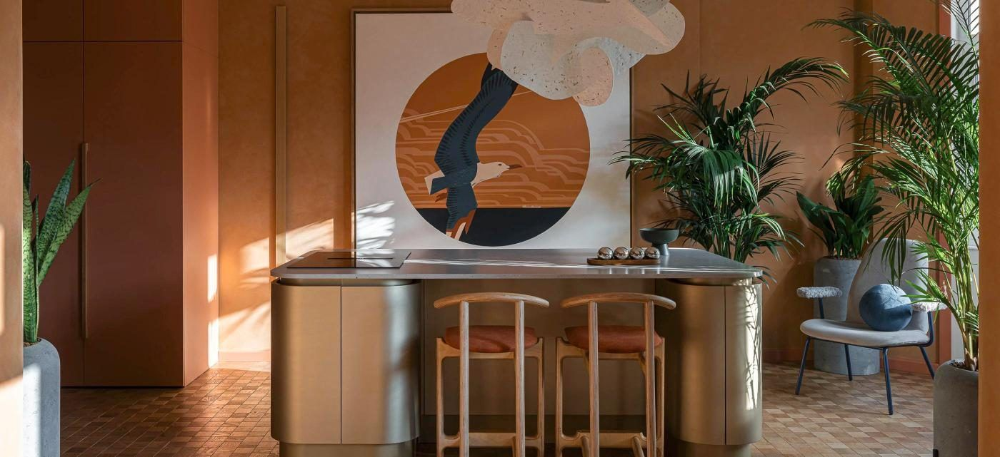
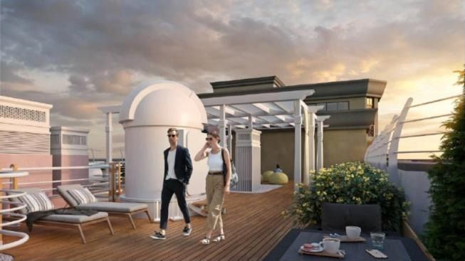

Ж
Железно | Киров
Приглашение
Главное премиальное событие 2022 года: VIP-презентация дома бутик-класса «Булычёв». Резиденты могут наслаждаться высоким уровнем сервиса бутик-отелей не только по особым случаям, а в любое время.
24 ноября 2022504 просмотра
Как написали бы сейчас: Вас приглашают. 24 ноября — закрытый вечер в доме бутик-класса «Булычёв»: грифоны, камень, сервис отеля. Мест немного.
Не реклама, а приглашение

Ж
Железно | Киров
Умный дом
Самый умный дом класса «А» в России: какой он? «Булычёв» знает Вас в лицо, делает каждое утро идеальным и всегда понимает Ваши желания.
4 декабря 2022536 просмотров
Как написали бы сейчас: Дом узнаёт Вас в лицо: Face ID у входа, лифт сам везёт на этаж, консьерж знает Ваше утро.
Технология на языке заботы

Значимое событие 2022 года в online. Мы приглашаем Вас на прямую трансляцию VIP-презентации дома бутик-класса «Булычёв».
15 декабря 20221,44 тыс. просмотров
Как написали бы сейчас: Закрытый вечер — открыт для всех онлайн. Смотрите, каким будет «Булычёв», 15 декабря в прямом эфире.
Событие собрало втрое больше просмотров

Ж
Железно | Киров
Обсерватория
Люди по всему миру увлечены идеей изучения звёздного неба. Но посещение планетария для многих — редкое событие. Резиденты дома «Булычёв» станут обладателями по-настоящему уникальной возможности…
12 марта 2023303 просмотра
Как написали бы сейчас: Звёзды — каждый вечер, а не по особым случаям. На крыше «Булычёва» — первая в России обсерватория в жилом доме.
Инфоповод федерального уровня